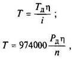
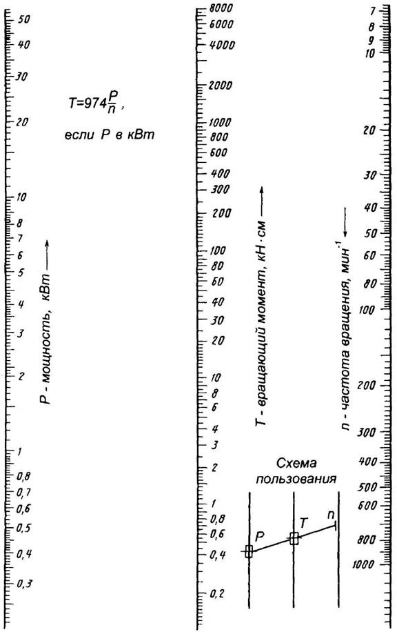

Определение вращающего момента
За расчетный момент принимают наибольший длительно действующий момент. Расчетный вращающий момент на валу

где Тд – момент на валу двигателя, Н·см; η – КПД участка кинематической цепи от двигателя до рассчитываемого вала; i = n/n0 – передаточное отношение от двигателя до вала; n – расчетная частота вращения вала, мин-1; n0 – частота вращения вала двигателя, мин-1; Рд – мощность на валу двигателя, кВт.
Для определения вращающего момента по мощности и частоте вращения можно пользоваться и номограммой (рис. 1).

Рис. 1. Номограмма для определения вращающего момента (кН·см) по мощности и частоте вращения